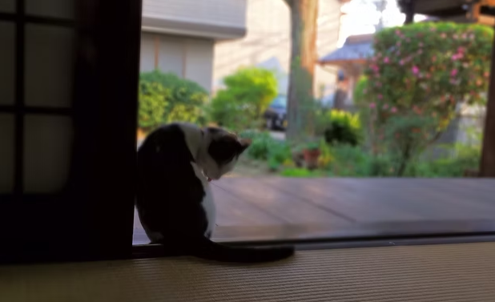
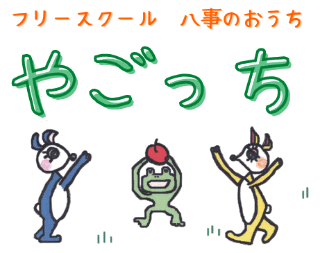

あいち惟の森
子ども一人ひとりの個性と主体性を尊重し、「自分で選び、自分で決める」学びを大切にしているオルタナティブスクールです。自然体験や対話を取り入れながら、年齢に関係なく多様な人との関わりを通して学びます。学校の時間割に縛られず、自分の興味や関心を深められる環境が特徴です。
ホームページ：オルタナティブ・スクール｜あいち惟の森

でらねこ
お寺を拠点としたフリースクールで、子どもたちが安心して過ごせる居場所づくりを重視しています。勉強だけでなく、遊びや会話、地域の人との交流を通して自分らしく成長できる環境を提供しています。子どものペースを尊重しながら、社会とのつながりを育む活動を行っています。
ホームページ：フリースクールでらねこ | 名古屋市 | 西念寺
インスタグラム：Instagram

八事のおうち「やごっち」
八事のおうち「やごっち」は、学校や家庭以外の「第三の居場所」として運営されている学びの場です。少人数の落ち着いた環境の中で、子ども同士やスタッフとの対話を大切にしながら過ごします。一人ひとりの興味や得意なことを尊重し、自分らしく学べる環境づくりに力を入れています。
このページについて
作者：さ／画像：／ICT 入門の授業で作成